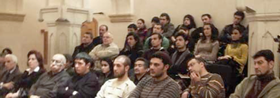

ВЛАДИМИР ПАПАВА ПРОТИВ ТУРЕЦКОЙ ПЛАТФОРМЫ СТАБИЛЬНОСТИ И СОТРУДНИЧЕСТВА НА КАВКАЗЕ
Протокол Гражданского слушания
с участием представителей Азербайджана и Грузии
Баку
19.03.2009
Истец: Владимир Папава
Ответчик: Расим Мусабеков
Председатель комиссии: Гулу Махарремли
Члены комиссии: Нино Гоголошвили, Иракли Чихладзе, Вафа Джафарова, Вагиф Ибрагимоглу
Программу осуществляют:
Альянс женщин за гражданское общество, Международная ассоциация женщин -инвалидов Грузии, Кавказский Центр Миротворческих Инициатив,
при поддержке Национального фонда демократии (NED)
с участием представителей Азербайджана и Грузии
Баку
19.03.2009
Истец: Владимир Папава
Ответчик: Расим Мусабеков
Председатель комиссии: Гулу Махарремли
Члены комиссии: Нино Гоголошвили, Иракли Чихладзе, Вафа Джафарова, Вагиф Ибрагимоглу
Программу осуществляют:
Альянс женщин за гражданское общество, Международная ассоциация женщин -инвалидов Грузии, Кавказский Центр Миротворческих Инициатив,
при поддержке Национального фонда демократии (NED)
Владимир Папава: Уважаемые зрители и члены комиссии! С самого начала необходимо разобраться в сути турецкой «Платформы стабильности и сотрудничества на Кавказе».
Летом 2008 года, после начала российской военной агрессии против Грузии, Турция возобновила свои усилия по формированию и реализации «Пакта стабильности на Кавказе», известного также под названиями «Кавказский альянс», «Форум стабильности на Кавказе», или «Платформа стабильности и сотрудничества на Кавказе» (в дальнейшем Платформа). Находясь в Москве 13 августа 2008 года, а на следующий день в Тбилиси премьер-министр Турции Тайип Эрдоган озвучил намерения Турции о реализации данной Платформы. Чуть позже, 20 августа, господин Эрдоган находясь с визитом в Баку, официально презентовал Платформу президенту Азербайджана, господину Ильхаму Алиеву.
Платформа в основном построена по образцу после войны в Косове в 1999 году балканского «Пакта стабильности для Юго-Восточной Европы» (в дальнейшем Пакт), рамочного соглашения, созданного под эгидой Евросоюза. Турция принимала участие в Пакте как сопредельное государство, а Россия как член «Большой восьмерки». Этот Пакт «просуществовал» до 27 февраля 2008 года, т.е. до того момента, когда он был заменен Советом по региональной кооперации по причине того, что было посчитано, что Пакт достиг задач поставленных перед ним. По всей видимости не случайно, что Пакт прекратил свое существование, как только Косово получило признание независимости со стороны многих государств, хотя, справедливости ради, необходимо подчеркнуть, что формально Пакт не имел целью способствование достижения независимости Косово.
Идея создания Платформы зародилась ещё в 2000 году, хотя и не получила тогда должного одобрения.
Предполагается, что основными участниками Платформы будут Азербайджан, Армения, Грузия, Россия и Турция. Если в Пакте функцию т.н. «опекуна» выполнял Евросоюз, то в Платформе та же функция будет возложена на ООН. Формат участников не является «закрытым» и к нему могут присоединиться и некоторые другие страны, среди которых прежде всего следует отметить США. Пока что открытым остается вопрос участия в Платформе Ирана.
Не смотря на то, что даже контуры, не говоря о содержании, Платформы в настоящее время находятся в процессе разработки, исходя из той информации, которая доступна о Платформе, можно предъявить иск против неё.
1. Отвечает ли интересам всех участников Платформы вовлечение России в установлении стабильности на Кавказе?
Самой уязвимой точкой идеи рассматриваемой Платформы является то, что она предполагает вовлечение России в процессы обеспечения стабильности на Кавказе, что после её военной агрессии против Грузии, а затем и признания Москвой в одностороннем порядке независимости Абхазии и Южной Осетии, не говоря о планах Кремля по их возможной интеграции с Россией, вряд ли можно оценивать продуктивным. Для Грузии Россия агрессор, оккупировавший грузинские территории, и поэтому Тбилиси без восстановления территориальной целостности страны никогда не согласиться признать продуктивным вовлечение России в процессы обеспечения стабильности на Кавказе, ибо такая стабильность означает окончательную потерю Грузией Абхазии и Южной Осетии. Следовательно, Платформа противоречит, по крайней мере, государственным интересам одной кавказской страны – Грузии.
Стремление сохранения стабильности на Кавказе в рамках Платформы означает сохранения статус-кво в отношении Нагорного Карабаха, что в корне противоречит национальным интересам Азербайджана.
Данные проблемы территориальной целостности Азербайджана и Грузии свидетельствуют о нежизнеспособности Платформы в том формате, который представлен к настоящему времени на рассмотрение.
2. Гарантирует ли Платформа безопасную реализацию транзитной функции Турции по транспортировке каспийских энергоресурсов в Европу?
Если исходить из того, что с экономической точки зрения для Турции нестабильность в Грузии представляет большую опасность, чем нарушение её территориальной целостности, то этот фактор, особенно после признания Москвой независимости Абхазии и Южной Осетии, может сыграть определенную роль в деле нахождения точек соприкосновения в сближении позиций Турции и России на Кавказе. Вместе с тем, следует учесть и то обстоятельство, что Турция и Россия преследуют разные цели в регионе – Анкара заинтересована в усилении своей роли в регионе, в то время как Москва стремится с большей отдачей использовать всё новые и новые рычаги для осуществления давления не только на своих кавказских соседей, но и на европейские страны. Исходя из этого, Москва никогда не откажется от распространения своего контроля на транспортировку каспийских энергоресурсов в Европу. Платформа сможет гарантировать Турции беспрепятственную и бесперебойную реализацию её транзитной функции со стороны России, если соответствующие трубопроводы окажутся под контролем Газпрома, в случае чего Турция потеряет роль самостоятельного регионального партнера для Запада. Да и этот сценарий не гарантирует Турции безопасную реализацию её транзитной функции в транспортировке каспийских энергоресурсов в Европу, так как в случае возможной конфронтации Москвы и Брюсселя подконтрольные Газпрому трубопроводы, в том числе и проходящие через Турцию, будут задействованы, по крайне мере, как «оружие шантажа» Кремля против Запада.
3. Гарантирует ли Платформа преодоление изолированности Армении от региональных транспортно-энергетических проектов?
Сама идея сотрудничества Турции и России в процессах установления и поддержания стабильности на Кавказе дает шанс Армении преодолеть её изолированность в региональных проектах транспортных коридоров, хотя при этом встает вопрос о возможной «цене», которую придется за это заплатить Армении. Если учесть, что такой «ценой» считается отказ Ереваном от поддержки существующего режима в Нагорном Карабахе, отказ от обвинений Турции в геноциде армян, а также отказ от территориальных притязаний к Турции, то вряд ли можно полагать о принципиальных возможностях Армении быть интегрированной в ближайшее время в региональные транспортные проекты.
В данном контексте особо важно подчеркнуть, что и Москва не просто заинтересована в изолированности Армении от региональных транспортных проектов, а, прибегая к терминологии Гаидза Минасяна, всячески способствует «калинградизации» Армении, т.е. реализуется т.н. концепция «осажденного государства». Попытки создания в Армении экономических основ для обретения независимости от Москвы, как правило, остаются виртуальными, ибо экономика Армении практически полностью поглощена «либеральной империей» России.
4. Насколько способствует реализации Платформы военно-политический союз между Арменией и Россией?
Немаловажно отметить, что в Армяно-Азербайджанском конфликте Россия с самого начала не просто встала на сторону Армении, но и оказывала ей военную помощь. Здесь же подчеркнем, что при прямой и откровенной поддержке сепаратистских движений в Абхазии и Южной Осетии, не говоря о непосредственной военной агрессии, Россия противопоставила себя и Грузии. В данном контексте неудивительно, что одним из направлений подрывной деятельности Москвы на постсоветском пространстве, согласно Збигневу Бжезинскому является давление на Грузию и Азербайджан в целях дестабилизации ситуации в этих странах.
В итоге военно-политический союз между Арменией и Россией оформился как стратегическое партнерство между этими странами. Небезынтересно отметить, что согласно некоторым армянским экспертам военная агрессия России в Грузии ещё больше укрепила для Армении значение военного сотрудничества с Россией. Признав за собой авангардную оборонительную функцию России на Кавказе, Армения тем самым приобрела не совсем лестный для суверенного государства статус форпоста России на Кавказе. Важно отметить, что очевидный перевес в двусторонних отношениях в пользу России, Армению из партнёра постепенно превращает в вассала России. И это не удивительно, если учесть, что Москва вокруг своих границ видит либо вассалов, либо врагов.
В условиях военно-политического союза между Арменией и Россией Платформа заработает лишь в том случае, если Азербайджан откажется от восстановления её территориальной целостности, и Анкара постарается и сможет уговорить Баку о признании независимости Нагорного Карабаха. Вряд ли такой сценарий может быть рассмотрен серьезно не только Азербайджаном, да и самой Турцией тоже.
Заключение
Все вышеперечисленные вопросы, к сожалению, не дают положительного ответа, что однозначно свидетельствует о том, что Платформа не может реально претвориться в жизнь. Не стоит быть наивным и думать, что Анкара не догадывается о неосуществимости Платформы в ближайшем будущем. В этом случае встает вопрос о том, почему же Анкара все-таки инициировала создание Платформы, при её очевидной бесперспективности.
Дело в том, что начало российской военной агрессии против Грузии требовало естественной реакции всех стран региона, и прежде всего Турции претендующей на роль регионального лидера. Инициирование Платформы даже во время военных действий в Грузии заслужило внимание мировой общественности, чем Турция еще раз напомнила всем о собственных интересах, связанных, прежде всего, с безопасностью транзитной функции каспийских энергоресурсов в Европу. К тому же Турции удалось громко заявить о себе, как о политической силе в регионе, учитывать которую надлежит всем заинтересованным странам. Именно в таком контексте может быть воспринята значимость Платформы на данном этапе и не более того.
При этом надо помнить, что разногласия между Турцией и Россией в отношении Азербайджана и Армении, не говоря о проектах транспортировки каспийских энергоресурсов через Грузию и Турцию, настолько существенны, что вряд ли стоит с особой надеждой смотреть на перспективность того, что в ближайшем будущем российско-турецкое тесное сотрудничество на Кавказе станет взаимоприемлемым, не говоря об интересах как других стран региона, так и мировых держав. Конец доклада.
ПРЕНИЯ ПО ВЫСТУПЛЕНИЮ ИСТЦА
Вагиф Ибрагимоглу (член комиссии): Отрицаете ли вы возможность того, что руководители России и Грузии смогут найти общий язык относительно статуса Абхазии и Южной Осетии?
Истец: Можно с уверенностью сказать, что в обозримом будущем не нынешний Президент России, ни следующий не признают ошибочность принятого Москвой решения о признании государственной независимости Абхазии и Южной Осетии, ибо такой шаг, особенно после широкомасштабной пропаганды о правомерности действий России в Грузии в Августе 2008 года, никак не был бы понят и одобрен большинством российских избирателей. Да, нынешнее и любое последующее руководство Грузии никогда не даст согласия на признание независимости Абхазии и Южной Осетии, и эти два региона будет рассматривать, только как оккупированные и аннексированные Россией территории. Следовательно, надеяться на то, что в обозримом будущем Москва и Тбилиси найдут общий язык по статусу Абхазии и Южной Осетии практически не возможно.
Иракли Чихладзе (член комиссии): Из Вашего выступления создалось впечатление, что одной из ошибок Турции было то, что она опоздала с этой инициативой. Почему Вы так считаете, если и в Вашем выступлении также было подчеркнуто, что идея создания Платформы зародилась ещё в 2000 году?
Истец: Несмотря на то, что идея создания Платформы зародилась ещё в 2000 году, она, к сожалению, тогда не получила должной поддержки от всех заинтересованных сторон. Повторно, идея Платформы была актуализирована лишь 13 августа 2008 года, т.е. после завершения активных военных действий России на территории Грузии. Было бы куда более целесообразно, если Анкара идею создания Платформы лоббировала бы в конце весны-начала лета 2008 года, когда напряженность в российско-грузинских отношениях очевидным образом возрастала.
Вопрос из аудитории: Каковы перспективы Армении вовлечься в региональные экономические проекты используя формат Платформы?
Истец: Теоретически Платформа должна создать институциональные основы для кооперации между всеми её участниками. Проблема в том, что согласно самим же армянским экспертам для этого руководству Армении придется отказаться от поддержки существующего режима в Нагорном Карабахе, отказаться от обвинений Турции в геноциде армян, а также отказаться от территориальных притязаний к Турции. Сами же эти эксперты скептически смотрят на реальность такого сценария. Следовательно, маловероятным представляется, что Баку и Стамбул готовы будут сотрудничать с Ереваном в региональных экономических проектах без существенного изменения политики Армении в отношении Азербайджана и Турции.
Вопрос из аудитории: Может ли Турция выступить медиатором в российско-грузинских отношениях?
Истец: Грузинское руководство приветствует активизацию роли третьих стран в российско-грузинских отношениях, и в этом контексте Турция может сыграть особую роль. Для этого у Анкары есть все возможности и без создания формата Платформы. Роль Турции чрезмерно важна и это признавалось и признается Грузинским руководством.
Вопрос из аудитории: Как Вы относитесь к балканскому «Пакту стабильности для Юго-Восточной Европы»? Считаете ли Вы, что он выполнил свою функцию?
Истец: Я полностью разделяю общепринятую положительную оценку относительно балканского «Пакта стабильности для Юго-Восточной Европы». Да он полностью выполнил свою функцию, и, прежде всего, способствовал избежать новые кровопролития. Опыт Пакта очень интересен и требует детального изучения. Опыт Пакта применим к Платформе, но, к сожалению, на данном этапе требуется более широкий формат, что подразумевается в идее Платформы.
Вопрос из аудитории: Что Вы имеете в виду? Иначе говоря, как надо видоизменить Платформу, чтобы она была бы реальным действенным институтом для преодоления проблем существующих на Южном Кавказе?
Истец: Для того, чтобы Платформа была бы реально продуктивной, по нашему мнению, необходимо вовлечение в неё США, ЕС и Ирана. И в этом случае не уверен, что проблема стабильности и сотрудничества на Кавказе будет достигнута в наикратчайшие сроки, не говоря о восстановлении территориальной целостности Азербайджана и Грузии, но в любом случае отмеченное расширение участников Платформы дает больше повод для оптимизма, чем формат из пяти государств, как это предлагается Анкарой.
Председатель закрывает прения по выступлению истца и дает слово Ответчику.
РАСИМ МУСАБЕКОВ В ЗАЩИТУ ПЛАТФОРМЫ БЕЗОПАСНОСТИ И СОТРУДНИЧЕСТВА
Трудно полемизировать с многоуважаемым профессором Папава, человеком, чью позицию во многом я разделяю, а аргументы признаю убедительными. Действительно, реализация турецкой инициативы «Платформа стабильности и безопасности на Кавказе» при существующем в регионе положении, когда имеются острые противоречия (между Грузией и Россией, Азербайджаном и Арменией, Турцией и Арменией) и неурегулированные конфликты (Абхазский, Югоосетинский, Нагорно-Карабахский и др.) представляется мало достижимой. Однако оттолкнувшись от знаменитого тезиса великого немецкого философа Гегеля: «Все действительное – разумно!» попытаюсь все же обосновать целесообразность данной инициативы и раскрыть потенциальные ее возможности.
Хочу вначале отметить, что турецкая инициатива возникла не на пустом месте и она далеко не первая в этом роде. Идею заключения пакта безопасности на Кавказе еще десять лет тому назад выдвинул Michael Emerson - руководитель CEPS (расположенный в негласной столице Евросоюза Брюсселе, очень влиятельный европейский аналитический центр). Аналогичные по смыслу идеи выдвигали в последующем президент Турции Сулейман Демирель, президент Грузии – Эдуард Шеварднадзе, позитивно высказывались по этому поводу с высоких трибун президент Азербайджана Гейдар Алиев, президент Армении Роберт Кочарян. Названных политиков трудно обвинить в недостатке реализма и прагматизма, или заподозрить в неискушенности в хитросплетениях мировой и региональной политики. Коль предложения о пакте безопасности раз за разом вот уже около 10 лет выдвигаются такими разными политиками, то быть может, в этой идее есть смысл?
Господин Папава, говоря о непродуктивности турецкой инициативы, ссылается на то, что являющийся ее прообразом балканский «Пакта стабильности для Юго-Восточной Европы» утратил свое значение. Это действительно так. Но зададимся вопросом, а сыграл ли балканский пакт свою позитивную роль или нет? На мой взгляд, несомненно, «да». Вспомним, конфликты между республиками бывшей Югославии удалось локализовать, не допустить их перерастания в новую большую Балканскую войну. А ведь две такие разрушительные войны, с участием всех балканских стран, имели место в начале прошлого века, и могла разразиться снова.
Благодаря, в том числе, и балканскому пакту, удалось блокировать наиболее опасные сценарии развития ситуации на Балканах в 80-90 годах. Было предотвращено разрастание конфликта между Грецией и Македонией; найдено взаимоприемлемое решение проблемы болгарских турок и снята напряженность в болгаро-турецких отношениях. В косовские события не вмешалась прямо, то есть вооруженным путем, Албания. Так что недооценивать, впрочем, как и переоценивать, значение балканского пакта не стоит. Этот Пакт утратил свое значение не только из-за признания Косово, но и потому, что Болгария, Румыния и Словения вступили в НАТО, а Хорватия и Албания также скоро пополнят ряды Североатлантического Альянса. Таким образом, вопросы безопасности Балкан ныне решаются в контексте НАТО и необходимости в механизме регионального пакта, больше нет.
Но Южный Кавказ в этом плане радикально отличается от Балкан. Если Югославский узел по существу развязан, в Боснии, Косово идет постконфликтная фаза, то, как показали события августа 2008 года в Южной Осетии и последующее вторжение российских войск в Грузию, на Южном Кавказе конфликтный потенциал не только не разряжен, а напротив, напряжение с каждым годом все более усиливается. Переход региона в сферу влияния какого-либо одного центра силы и влияния, будь это НАТО или Россия, в обозримый период не предвидится. Здесь еще долгое время сохранится не только внутренние конфликты, но и соперничество великих и региональных держав. Платформа безопасности и сотрудничества, предложенная Турцией, как форма достижения баланса интересов и поддержания стабильности, может оказаться востребованной. И через такой баланс добиться прогресса в урегулировании конфликтов, вызванных сепаратизмом и территориальными спорами между странами Южного Кавказа.
Показательно, что Анкара выступила со своей инициативой в момент, когда между Россией и Грузией разразилась самая настоящая война, в переговорном процессе по урегулированию карабахского конфликта возникла пауза, сопровождаемая усилением перестрелок по линии прекращения огня. Одновременно турецкие лидеры предприняли шаги по нормализации отношений с Арменией. Полагаю, что это не простое совпадение. Южному Кавказу грозила участь превратиться в арену столкновения Запада (НАТО) с Россией. При таком развитии событий именно Турции была уготовлена роль передового фронта, с несением тяжести военных, экономических потерь и рисков. Очевидно, что подобный сценарий не вызывал восторг у правящих кругов Турции и выступив с инициативой принятия упомянутой Платформы правительство этой страны завязала диалог с Москвой, Тбилиси, Баку и Ереваном по вопросам безопасности. Хотя инициатива была встречена воспринята почти везде с большей или меньшей долей скептицизма, но никем не была отвергнута с порога. Очевидно, что налаживание Анкарой коммуникаций по вопросам безопасности наряду с усилиями Евросоюза и председательствовавшего на тот момент Президента Франции Саркози, способствовало тому, что события на Южном Кавказе не пошли по критическому сценарию.
Хочу обратить внимание и на то, что в отличие от аналогичных прошлых инициатив турецкие лидеры продолжили свои усилия по продвижению Платформы, как на двусторонней основе, так и на многосторонней. Так, в конце января в Стамбуле была организована встреча, на уровне заместителей министров иностранных дел пяти стран с целью обсуждения данного вопроса. В силу понятных причин Грузинский и Азербайджанский представители заявили о невозможности участия в Пакте безопасности со странами, которые оккупируют их территории, но от продолжения диалога не отказались.
Господин Папава ставит вопрос о допустимости вовлечения России в установлении стабильности на Кавказе. Разделяю его справедливое негативное отношение к деструктивной политике Москвы, которая последние 20 лет занималась провоцированием конфликтов с тем, чтобы иметь рычаги давления над новыми независимыми государствами Южного Кавказа и сохранить здесь свое преобладание. Но спросим себя, а реалистично ли предполагать в существующих условиях архитектура безопасности на Южном Кавказе, которая исключала бы Россию? Ответ очевиден – нет.
Понятно как трудно вести диалог с Россией после того, как она совершила в августе прошлого года интервенцию в Грузию, установила военный контроль над сепаратистскими анклавами и в нарушение международного права признала независимость Абхазии и Южной Осетии. Точно также Азербайджану трудно мириться с посредничеством России в урегулировании карабахского конфликта, зная, что Москва находится в военном союзе с Арменией, накачивает ее оружием, поддерживает финансово. Но реалистично Баку продолжает переговоры при посредничестве Минской Группы ОБСЕ. Полагаю, что и Грузия, как бы это не было трудно, будет вынуждена вести диалог с Россией, так как представить иной вариант, когда самостоятельно, или при поддержке других больших стран, Грузия вступит в прямое противоборство с Россией – сложно. Формат диалога для реализации турецкой инициативы по Платформе дает возможность для переговоров с Москвой, как на многосторонней, так и двусторонней основе. Для Азербайджана обсуждение Платформы – это возможность подключения к процессу обеспечения безопасности на Южном Кавказе, а следовательно и к урегулирования карабахского конфликта дружественной как для нас, так и для Грузии, Турции. В конце концов, в рамках этой инициативы нас трое, против стратегического тандема Армения-Россия.
Профессор Папава сомневается, что Платформа безопасности может гарантировать транзитную функцию Южного Кавказа и Турции в обход России. Но дело в том, что южно-кавказский энерго - и транспортный коридор – реальность. Нравится это Москве или нет. Безопасность этого коридора будет обеспечена либо через принятие и соблюдение всеми сторонами определенных правил поведения, либо в противном случае военным присутствием Запада и Турции. Соответствующий договор с возможностью продвинуть в Грузию военную инфраструктуру обозначили США, а в Азербайджане это может сделать Турция. Вряд ли такой сценарий придется по душе Москве. Альтернативу представляет турецкая инициатива по Платформе безопасности.
Симптоматично, что Анкара предлагает подключение Армении к энергетическим и транспортным проектам, в случае занятия конструктивной линии в вопросах безопасности и урегулирования карабахского конфликта. Господин Папава сомневается, что Ереван в состоянии позитивно среагировать на такое предложение. Но армянам приходится считаться с тем, что после августовской российско-грузинской войны они полностью лишились военных коммуникаций со своим стратегическим союзником – Россией. Если продвижение военной инфраструктуры США и Турции в Грузию и Азербайджан осуществится, а Баку используя свое финансовое превосходство, продолжит усиливать армию, то положение Армении станет катастрофическим. В отличие от Калининграда, который связан с материковой Россией морскими и воздушными путями, Армения таких коммуникаций лишена.
Союз Армении и России – факт. Неконструктивная позиция Москвы и Еревана позволит Турции прямо поставить вопрос о том, чтобы уравновесить этот военно-политический союз аналогичным альянсом с Азербайджаном. Если российские военные самолеты могут размещаться в Армении, и здесь развернута военная база РФ, то если при поддержке Вашингтона и благожелательно молчании Европы Турция выдвинет свои вооруженные подразделения в Азербайджан для обеспечения безопасности энерго-коридора, возразить что-либо аргументировано Москве будет нечем. Именно понимание опасности для себя в случае немотивированного отказа от предложений Анкары в контексте Платформы безопасности побуждает Кремль при всем его великодержавном высокомерии, согласиться на предметное обсуждение турецкой инициативы.
Никто не ждет, что Платформа безопасности и сотрудничества, предложенная Турцией будет в скором времени реализована. Но сам диалог по вопросам безопасности на Южном Кавказе полезен и усилия в данном направлении могут дать определенные позитивные результаты. Допускаю, что ранее Москва, претендовавшая на эксклюзивную роль на Южном Кавказе любые предложения о балансе интересов в этом регионе рассматривала как свое отступление, теперь, столкнувшись с тем, что Кавказ полностью выходит из-под ее влияния, может изменить свое отношение к турецкой инициативе. Хотя Россия привыкла иметь на своих границах вассалов или противников, но пример нейтральной Финляндии не так уж плох для Москвы и перспектива мирного, демилитаризованного и стабильного Южного Кавказа может оказаться при определенных обстоятельствах показаться приемлемой для всех.
Конец доклада.
Истец: Принятие турецкой инициативы «Платформа безопасности и сотрудничества на Южном Кавказе» не откроет ли возможность для России беспрепятственно пользоваться азербайджанскими коммуникациями для усиления своего военного присутствия в Армении, в ущерб Азербайджану и Грузии?
Ответчик: Без того, чтобы наступил прогресс в урегулировании карабахского конфликта, как минимум вывода армянских сил из территорий, оккупированных за границами Нагорного Карабаха никакое подписание соглашения между сторонами не возможно. В иных условиях необходимость в наращивании военного присутствия РФ в Армении, вооружение Армении отпадет. Следовательно, Ваши справедливые опасения будут в существенной мере сняты.
Истец: После действий Москвы против Грузии в августе 2008 года можно ли вообще рассматривать какую-то систему безопасности и сотрудничества с участием России? Что же еще такое должна предпринять Москва, чтобы иллюзии в отношении возможности договориться с ней прошли окончательно?
Ответчик: Отвечу вопросом на вопрос. А возможна ли сегодня какая-либо система безопасности на Южном Кавказе, которая исключала бы Россию? Действительно, события августа 2008 года обнажили опасность обострения конкуренции между НАТО и Россией для всего региона и обернулись большими потерями для Грузии. Но одновременно эти события актуализировали необходимость обеспечить безопасность Южного Кавказа через достижение баланса интересов, одной из возможных форм которого является турецкая инициатива. Иллюзий в отношении намерений Москвы ни у кого нет, но во-первых, нет желающих воевать с Россией с тем, чтобы полностью вытеснить ее из региона. А во-вторых, цена такой войны для жителей Южного Кавказа может оказаться чрезмерной, даже если предположить, что желанная цель будет достигнута.
Вагиф Ибрагимоглу (член комиссии): В отличие от истца вы считаете турецкую инициативу не пропагандистской, а политической. Обоснуйте свои утверждения.
Ответчик: Конечно же в любой такого рода инициативе имеется как пропагандистская, так и политическая составляющая. Очевидно, что Анкара, выдвигая свою инициативу, преследовала политические цели – не допустить большую войну на Кавказе, опасную в том числе и для нее, и для этого завязать диалог со всеми заинтересованными сторонами. Среди них оказались не только Россия, Грузия, Азербайджан, но даже Армения, с которой у Анкары до настоящего времени нет дипломатических отношений. Турция продолжает свои усилия, а в развитие провозглашенной инициативы провела недавно рабочую встречу на уровне зам. Министров иностранных дел. По-моему политический характер турецкой инициативы бесспорен, хотя успех вовсе не гарантирован.
Вопрос из аудитории: Как в действительности добиться реализации турецкой инициативы?
Ответчик: Если бы я знал формулу успеха, то не стал бы ее скрывать. Очевидно лишь одно, что нужно проявлять настойчивость и найти баланс интересов. Как минимум, для этого следует продолжить диалог.
Ираклий Чихладзе (член комиссии): Что останется от турецкой инициативы, если Москва вновь вторгнется в Грузию?
Ответчик: Конфронтационные сценарии вовсе не исключаются. Причем не меньшие риски могут возникнуть и в случае возобновления военных действий между Арменией и Азербайджаном. Суть Турецкой инициативы как раз заключается в том, чтобы втянуть конфликтующие стороны в диалог и через него выйти на договоренности, которые исключили бы военные сценарии.
Кто считает аргументы и взгляд Истца более обоснованными?
За – 26
Против – 14
Воздержавшихся - 3
Председатель: Вопреки предсказаниям некоторых экспертов, победил гость. Таким образом, он смог убедить аудиторию в нереальности Турецкой инициативы.
Хочу вначале отметить, что турецкая инициатива возникла не на пустом месте и она далеко не первая в этом роде. Идею заключения пакта безопасности на Кавказе еще десять лет тому назад выдвинул Michael Emerson - руководитель CEPS (расположенный в негласной столице Евросоюза Брюсселе, очень влиятельный европейский аналитический центр). Аналогичные по смыслу идеи выдвигали в последующем президент Турции Сулейман Демирель, президент Грузии – Эдуард Шеварднадзе, позитивно высказывались по этому поводу с высоких трибун президент Азербайджана Гейдар Алиев, президент Армении Роберт Кочарян. Названных политиков трудно обвинить в недостатке реализма и прагматизма, или заподозрить в неискушенности в хитросплетениях мировой и региональной политики. Коль предложения о пакте безопасности раз за разом вот уже около 10 лет выдвигаются такими разными политиками, то быть может, в этой идее есть смысл?
Господин Папава, говоря о непродуктивности турецкой инициативы, ссылается на то, что являющийся ее прообразом балканский «Пакта стабильности для Юго-Восточной Европы» утратил свое значение. Это действительно так. Но зададимся вопросом, а сыграл ли балканский пакт свою позитивную роль или нет? На мой взгляд, несомненно, «да». Вспомним, конфликты между республиками бывшей Югославии удалось локализовать, не допустить их перерастания в новую большую Балканскую войну. А ведь две такие разрушительные войны, с участием всех балканских стран, имели место в начале прошлого века, и могла разразиться снова.
Благодаря, в том числе, и балканскому пакту, удалось блокировать наиболее опасные сценарии развития ситуации на Балканах в 80-90 годах. Было предотвращено разрастание конфликта между Грецией и Македонией; найдено взаимоприемлемое решение проблемы болгарских турок и снята напряженность в болгаро-турецких отношениях. В косовские события не вмешалась прямо, то есть вооруженным путем, Албания. Так что недооценивать, впрочем, как и переоценивать, значение балканского пакта не стоит. Этот Пакт утратил свое значение не только из-за признания Косово, но и потому, что Болгария, Румыния и Словения вступили в НАТО, а Хорватия и Албания также скоро пополнят ряды Североатлантического Альянса. Таким образом, вопросы безопасности Балкан ныне решаются в контексте НАТО и необходимости в механизме регионального пакта, больше нет.
Но Южный Кавказ в этом плане радикально отличается от Балкан. Если Югославский узел по существу развязан, в Боснии, Косово идет постконфликтная фаза, то, как показали события августа 2008 года в Южной Осетии и последующее вторжение российских войск в Грузию, на Южном Кавказе конфликтный потенциал не только не разряжен, а напротив, напряжение с каждым годом все более усиливается. Переход региона в сферу влияния какого-либо одного центра силы и влияния, будь это НАТО или Россия, в обозримый период не предвидится. Здесь еще долгое время сохранится не только внутренние конфликты, но и соперничество великих и региональных держав. Платформа безопасности и сотрудничества, предложенная Турцией, как форма достижения баланса интересов и поддержания стабильности, может оказаться востребованной. И через такой баланс добиться прогресса в урегулировании конфликтов, вызванных сепаратизмом и территориальными спорами между странами Южного Кавказа.
Показательно, что Анкара выступила со своей инициативой в момент, когда между Россией и Грузией разразилась самая настоящая война, в переговорном процессе по урегулированию карабахского конфликта возникла пауза, сопровождаемая усилением перестрелок по линии прекращения огня. Одновременно турецкие лидеры предприняли шаги по нормализации отношений с Арменией. Полагаю, что это не простое совпадение. Южному Кавказу грозила участь превратиться в арену столкновения Запада (НАТО) с Россией. При таком развитии событий именно Турции была уготовлена роль передового фронта, с несением тяжести военных, экономических потерь и рисков. Очевидно, что подобный сценарий не вызывал восторг у правящих кругов Турции и выступив с инициативой принятия упомянутой Платформы правительство этой страны завязала диалог с Москвой, Тбилиси, Баку и Ереваном по вопросам безопасности. Хотя инициатива была встречена воспринята почти везде с большей или меньшей долей скептицизма, но никем не была отвергнута с порога. Очевидно, что налаживание Анкарой коммуникаций по вопросам безопасности наряду с усилиями Евросоюза и председательствовавшего на тот момент Президента Франции Саркози, способствовало тому, что события на Южном Кавказе не пошли по критическому сценарию.
Хочу обратить внимание и на то, что в отличие от аналогичных прошлых инициатив турецкие лидеры продолжили свои усилия по продвижению Платформы, как на двусторонней основе, так и на многосторонней. Так, в конце января в Стамбуле была организована встреча, на уровне заместителей министров иностранных дел пяти стран с целью обсуждения данного вопроса. В силу понятных причин Грузинский и Азербайджанский представители заявили о невозможности участия в Пакте безопасности со странами, которые оккупируют их территории, но от продолжения диалога не отказались.
Господин Папава ставит вопрос о допустимости вовлечения России в установлении стабильности на Кавказе. Разделяю его справедливое негативное отношение к деструктивной политике Москвы, которая последние 20 лет занималась провоцированием конфликтов с тем, чтобы иметь рычаги давления над новыми независимыми государствами Южного Кавказа и сохранить здесь свое преобладание. Но спросим себя, а реалистично ли предполагать в существующих условиях архитектура безопасности на Южном Кавказе, которая исключала бы Россию? Ответ очевиден – нет.
Понятно как трудно вести диалог с Россией после того, как она совершила в августе прошлого года интервенцию в Грузию, установила военный контроль над сепаратистскими анклавами и в нарушение международного права признала независимость Абхазии и Южной Осетии. Точно также Азербайджану трудно мириться с посредничеством России в урегулировании карабахского конфликта, зная, что Москва находится в военном союзе с Арменией, накачивает ее оружием, поддерживает финансово. Но реалистично Баку продолжает переговоры при посредничестве Минской Группы ОБСЕ. Полагаю, что и Грузия, как бы это не было трудно, будет вынуждена вести диалог с Россией, так как представить иной вариант, когда самостоятельно, или при поддержке других больших стран, Грузия вступит в прямое противоборство с Россией – сложно. Формат диалога для реализации турецкой инициативы по Платформе дает возможность для переговоров с Москвой, как на многосторонней, так и двусторонней основе. Для Азербайджана обсуждение Платформы – это возможность подключения к процессу обеспечения безопасности на Южном Кавказе, а следовательно и к урегулирования карабахского конфликта дружественной как для нас, так и для Грузии, Турции. В конце концов, в рамках этой инициативы нас трое, против стратегического тандема Армения-Россия.
Профессор Папава сомневается, что Платформа безопасности может гарантировать транзитную функцию Южного Кавказа и Турции в обход России. Но дело в том, что южно-кавказский энерго - и транспортный коридор – реальность. Нравится это Москве или нет. Безопасность этого коридора будет обеспечена либо через принятие и соблюдение всеми сторонами определенных правил поведения, либо в противном случае военным присутствием Запада и Турции. Соответствующий договор с возможностью продвинуть в Грузию военную инфраструктуру обозначили США, а в Азербайджане это может сделать Турция. Вряд ли такой сценарий придется по душе Москве. Альтернативу представляет турецкая инициатива по Платформе безопасности.
Симптоматично, что Анкара предлагает подключение Армении к энергетическим и транспортным проектам, в случае занятия конструктивной линии в вопросах безопасности и урегулирования карабахского конфликта. Господин Папава сомневается, что Ереван в состоянии позитивно среагировать на такое предложение. Но армянам приходится считаться с тем, что после августовской российско-грузинской войны они полностью лишились военных коммуникаций со своим стратегическим союзником – Россией. Если продвижение военной инфраструктуры США и Турции в Грузию и Азербайджан осуществится, а Баку используя свое финансовое превосходство, продолжит усиливать армию, то положение Армении станет катастрофическим. В отличие от Калининграда, который связан с материковой Россией морскими и воздушными путями, Армения таких коммуникаций лишена.
Союз Армении и России – факт. Неконструктивная позиция Москвы и Еревана позволит Турции прямо поставить вопрос о том, чтобы уравновесить этот военно-политический союз аналогичным альянсом с Азербайджаном. Если российские военные самолеты могут размещаться в Армении, и здесь развернута военная база РФ, то если при поддержке Вашингтона и благожелательно молчании Европы Турция выдвинет свои вооруженные подразделения в Азербайджан для обеспечения безопасности энерго-коридора, возразить что-либо аргументировано Москве будет нечем. Именно понимание опасности для себя в случае немотивированного отказа от предложений Анкары в контексте Платформы безопасности побуждает Кремль при всем его великодержавном высокомерии, согласиться на предметное обсуждение турецкой инициативы.
Заключение
Никто не ждет, что Платформа безопасности и сотрудничества, предложенная Турцией будет в скором времени реализована. Но сам диалог по вопросам безопасности на Южном Кавказе полезен и усилия в данном направлении могут дать определенные позитивные результаты. Допускаю, что ранее Москва, претендовавшая на эксклюзивную роль на Южном Кавказе любые предложения о балансе интересов в этом регионе рассматривала как свое отступление, теперь, столкнувшись с тем, что Кавказ полностью выходит из-под ее влияния, может изменить свое отношение к турецкой инициативе. Хотя Россия привыкла иметь на своих границах вассалов или противников, но пример нейтральной Финляндии не так уж плох для Москвы и перспектива мирного, демилитаризованного и стабильного Южного Кавказа может оказаться при определенных обстоятельствах показаться приемлемой для всех.
Конец доклада.
ПРЕНИЯ ПО ВЫСТУПЛЕНИЮ OТВЕТЧИКА
Истец: Принятие турецкой инициативы «Платформа безопасности и сотрудничества на Южном Кавказе» не откроет ли возможность для России беспрепятственно пользоваться азербайджанскими коммуникациями для усиления своего военного присутствия в Армении, в ущерб Азербайджану и Грузии?
Ответчик: Без того, чтобы наступил прогресс в урегулировании карабахского конфликта, как минимум вывода армянских сил из территорий, оккупированных за границами Нагорного Карабаха никакое подписание соглашения между сторонами не возможно. В иных условиях необходимость в наращивании военного присутствия РФ в Армении, вооружение Армении отпадет. Следовательно, Ваши справедливые опасения будут в существенной мере сняты.
Истец: После действий Москвы против Грузии в августе 2008 года можно ли вообще рассматривать какую-то систему безопасности и сотрудничества с участием России? Что же еще такое должна предпринять Москва, чтобы иллюзии в отношении возможности договориться с ней прошли окончательно?
Ответчик: Отвечу вопросом на вопрос. А возможна ли сегодня какая-либо система безопасности на Южном Кавказе, которая исключала бы Россию? Действительно, события августа 2008 года обнажили опасность обострения конкуренции между НАТО и Россией для всего региона и обернулись большими потерями для Грузии. Но одновременно эти события актуализировали необходимость обеспечить безопасность Южного Кавказа через достижение баланса интересов, одной из возможных форм которого является турецкая инициатива. Иллюзий в отношении намерений Москвы ни у кого нет, но во-первых, нет желающих воевать с Россией с тем, чтобы полностью вытеснить ее из региона. А во-вторых, цена такой войны для жителей Южного Кавказа может оказаться чрезмерной, даже если предположить, что желанная цель будет достигнута.
Вагиф Ибрагимоглу (член комиссии): В отличие от истца вы считаете турецкую инициативу не пропагандистской, а политической. Обоснуйте свои утверждения.
Ответчик: Конечно же в любой такого рода инициативе имеется как пропагандистская, так и политическая составляющая. Очевидно, что Анкара, выдвигая свою инициативу, преследовала политические цели – не допустить большую войну на Кавказе, опасную в том числе и для нее, и для этого завязать диалог со всеми заинтересованными сторонами. Среди них оказались не только Россия, Грузия, Азербайджан, но даже Армения, с которой у Анкары до настоящего времени нет дипломатических отношений. Турция продолжает свои усилия, а в развитие провозглашенной инициативы провела недавно рабочую встречу на уровне зам. Министров иностранных дел. По-моему политический характер турецкой инициативы бесспорен, хотя успех вовсе не гарантирован.
Вопрос из аудитории: Как в действительности добиться реализации турецкой инициативы?
Ответчик: Если бы я знал формулу успеха, то не стал бы ее скрывать. Очевидно лишь одно, что нужно проявлять настойчивость и найти баланс интересов. Как минимум, для этого следует продолжить диалог.
Ираклий Чихладзе (член комиссии): Что останется от турецкой инициативы, если Москва вновь вторгнется в Грузию?
Ответчик: Конфронтационные сценарии вовсе не исключаются. Причем не меньшие риски могут возникнуть и в случае возобновления военных действий между Арменией и Азербайджаном. Суть Турецкой инициативы как раз заключается в том, чтобы втянуть конфликтующие стороны в диалог и через него выйти на договоренности, которые исключили бы военные сценарии.
ИТОГИ ГОЛОСОВАНИЯ
Кто считает аргументы и взгляд Истца более обоснованными?
За – 26
Против – 14
Воздержавшихся - 3
Председатель: Вопреки предсказаниям некоторых экспертов, победил гость. Таким образом, он смог убедить аудиторию в нереальности Турецкой инициативы.